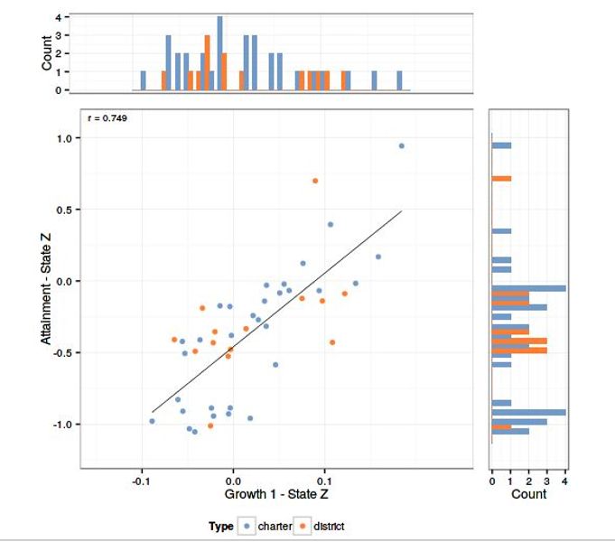
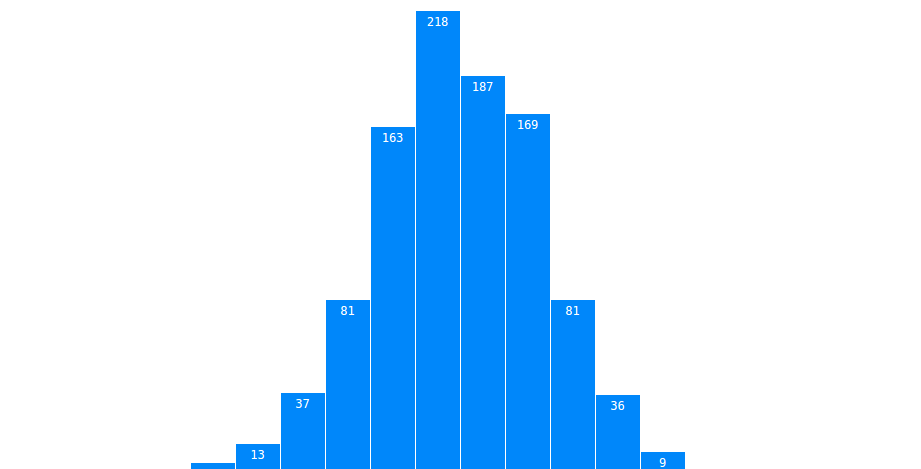
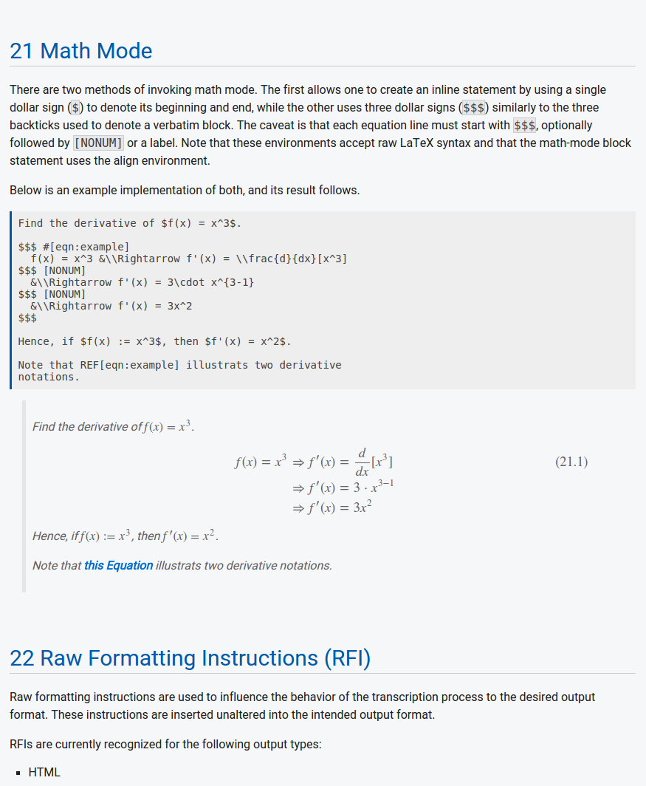

<style>
	/* --Grid System-- */
	
	/* Any child of a grid system is assigned a 12 column grid 	*/
	.grid > * {
		display: grid;
		grid-column-gap: 1rem;
		grid-row-gap: 1rem;
		grid-template-columns: repeat(12, minmax(max-content, 1fr));
		justify-content: end;
		max-width: 100vw;
	}
	
	/* Default grid section children to single columns.  */
	.grid > * > * {
		grid-column: 12;
		margin: 0;
		padding: 2rem 0;
	}
	
	.grid > * > img {
		max-width: 100%;
	}
	
	/* 1:1 children get equal portions */
	.one-one > * {
		grid-column: span 5;
	}
	
	.one-one > *:nth-child(2n + 1) {
		grid-column: 2 / span 5;
		justify-self: end;
	}
	
	/* 1:3 children are split 3 parts to 9 parts */
	.one-three > * {
		grid-column: span 3;
	}
	.one-three > *:nth-child(2n) {
		grid-column: span 9;
	}
	
	/* Easy class names reveal the ratio of space each child receives */
	.three-one > * {
		grid-column: span 9;
	}
	.three-one > *:nth-child(2n) {
		grid-column: span 3;
	}
	
	/* Pairs that don't span the entire width can utilize empty grid columns for margin */
	.one-nine > * {
		grid-column: 2 / span 1;
	}
	.one-nine > *:nth-child(2n) {
		grid-column: span 9;
	}
	
	/* It doesn't have to just be pairs, either */
	.three-three-three > * {
		grid-column: span 4;
	}
	
	.one-center > *{
		grid-column: 4 / span 6;
	}
	
	/* Fixed width or wide content should be okay too. */
	.fixed-width {
		display: inline-block;
		max-width: none;
		padding-right: 3rem;
	}
	
	/* --Sticky headers and footers-- */
	
	/* Make sure margin and padding is counted */
	* {
		box-sizing: border-box;
	}
	
	/* Setting body to inline-block ensures it contains wide content */
	body {
		display: inline-block;
		margin: 0;
		width: 100%;
	}
	
	/* This is where we tell it to stick. Sticky is relative to parent, so these  */
	/* are children elements. */
	header > *,
	footer > * {
		left: 0;
		max-width: 100vw;
		padding: 0 2rem;
		position: sticky;
	}
	
	/* --Display-- */	
	header,
	footer	{
		background: #006bc7;
		color: #fff;
		padding: 1em 0;
		text-align: center;
	}
	
	header.grid > * > * {
		align-self: center;
		grid-column: span 6;
		justify-self: center;
		padding: 0;
	}
	
	.logo {
		fill: #fff;
		font-family: sans-serif;
		width: 100px;
		font-size: 1rem;
	}
	
	main {
		padding: 0;
	}
	
	section:nth-child(2n+1) {
		background: #006bc7;
		color: #fff;
	}
	
	p {
		margin-top: 0;
	}
	
	footer.grid > * > * {
		justify-self: center;
		padding: 0;
	}
	
	/* "Widgets" */
	.esc-splash {
		background: url(img/pattern_welcome.png);
		padding: 30vh 0;
	}
	
	.esc-splash > * > * {
		padding: 0;
	}
</style>
<header class="grid">
	<div>
		<h1 class="logo">
			<svg viewBox="0 0 50 35.9" class="esc-logo" xmlns:xlink="http://www.w3.org/1999/xlink">
				<text x="-2" y="35" class="icon" font-size="60">
					<tspan font-weight="bold">e</tspan>
					<tspan dx="-20" dy="-24" font-size="20">sc</tspan>
				</text>
			</svg>
		</h1>
		<nav>
			HEADER LINKS
		</nav>
	</div>
</header>
<main class="grid">
	<section>
		<div class="esc-splash grid">
			<div class="one-center">
				<h2>Data quality you can trust</h2>
				<p>ESC brings visual analytics to education administrators, policy makers, and reformers, specializing in data integrity, analytics, and interactive data visualization.</p>
			</div>
		</div>
	</section>
	<section class="one-one">
		
		<div>
			<label>DATA BLENDING</label>
			<h2>Meet Escalate</h2>
			<p>Escalate is our powerful data-blending platform. It was designed in-house to tackle the biggest problems in education data. It's our one-stop solution to ensuring your data is clean, consistent, and well-structured.</p>
		</div>
	</section>
	<section class="one-one">
		<div>
			<h2>Rapid Integration</h2>
			<p>Escalate allows us to <em>extract</em>, <em>transform</em>, and <em>load</em> data quickly from heterogeneous sources and transform them into a coherent, normalized structure. We call this <em>Data Integration</em>, because our approach to handling data is unique.</p>
		</div>
		
	</section>
	<section class="one-one">
		<div>
			<h2>Dynamic Reporting</h2>
			<p>An integrated document framework allows us to generate a host of reports that can be easily converted to well-formatted PDFs or ready-to-deploy HTML.</p>
		</div>
		
	</section>
	<section class="one-one">
		
		<div>
			<label>IMPECCABLE DATA</label>
			<h2>Robust QA</h2>
			<p><em>Quality Assurance</em> has never been simpler. Utilizing a library of automated reporting routines, Escalate enables us to identify and resolve anomalies promptly and act on them, when appropriate.</p>
		</div>
	</section>
	<section class="one-one">
		<div>
			<label>DATA SECURITY</label>
			<h2>Secure &amp; Anonymous</h2>
			<p><em>Protection and privacy</em> of your data is our top priority. Our process ensures anonymous data remain anonymous, and our authentication system ensures your data is always secure from outside threats.</p>
		</div>
		
	</section>	
</main>
<footer class="grid">
	<section class="one-center">
		<p>©2018 Education Strategy Consulting, Inc</p>
		<nav>FOOTER LINKS</nav>
	</section>
</footer>